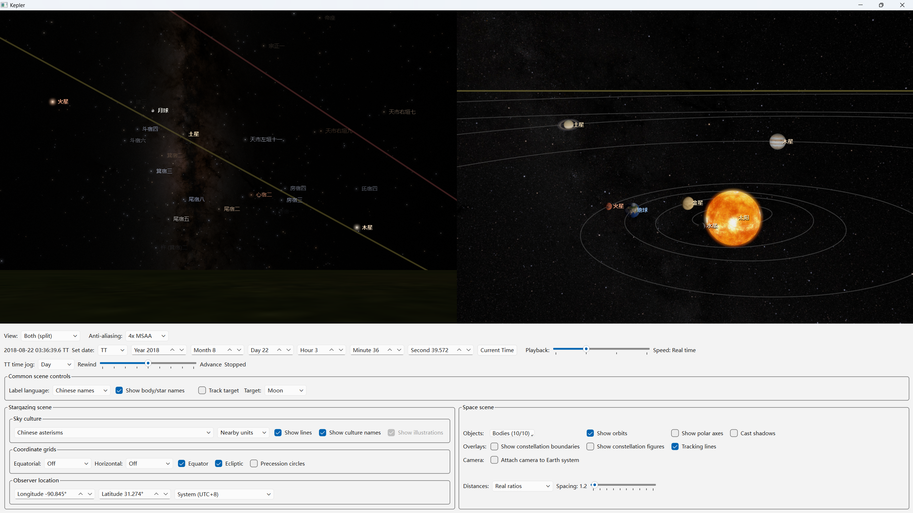

REAL-TIME SKY / OPENGL 4.2PERSONAL ARCHIVE2026 / CONTINUING
学习、创作
重塑我与世界的联结
这里记录我与世界的故事：从天文、物理、图形学，到游戏创作与软件工程。每个项目都是一个学习过程，留下了探索、理解和表达的轨迹。
-
01
天文学、物理仿真探索世界、理解世界
-
02
计算机图形学再现我眼中的世界
-
03
游戏创作自我探索与表达
A record of building, revisiting, and understanding.
当前关注
- Real-time Graphics
- Visualization
- Engine Architecture
- AI-assisted Development
SELECTED WORK
Kepler——
像开普勒一样仰望星空。
这是一个持续开发的个人项目，以交互式可视化呈现我对天文学与图形学的探索。天文学研究的不只是天体的运行，也连接着人类观测星空的历史、神话与文化。我希望借由 Kepler，从视觉感知、技术表达与文化叙事等角度，重新理解并建立自己与世界的联结。
EARLY ARCHIVE
早期流体仿真与游戏开发项目：这些项目保留了更早阶段的探索。原始工程尚未为公开发布重新整理，现阶段以录屏和过程说明为主。